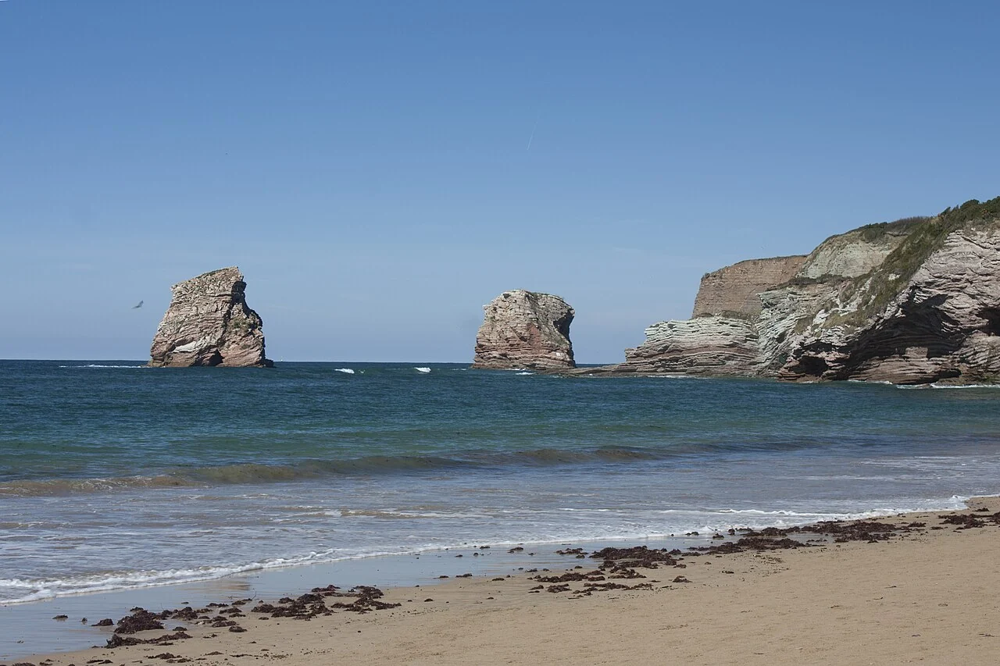

Hendaye
Pays basque, France · surf, bodyboard, baignade

À la frontière espagnole, une grande plage ouvre la baie sur l’Atlantique. Le surf se pratique sur le front de mer ; les secteurs et les conditions se choisissent avec les écoles locales.
- Lieu
- Pays basque, France
- Niveau
- Variable selon les conditions
- Activités
- surf, bodyboard, baignade
- Type d'eau
- Mer / océan
- Coordonnées
- 43.37, -1.77 (position approximative du secteur)
Ouvrir dans Ocean Buddy Télécharger sur l'App Store
Source : Wikipédia · géographie du lieu.